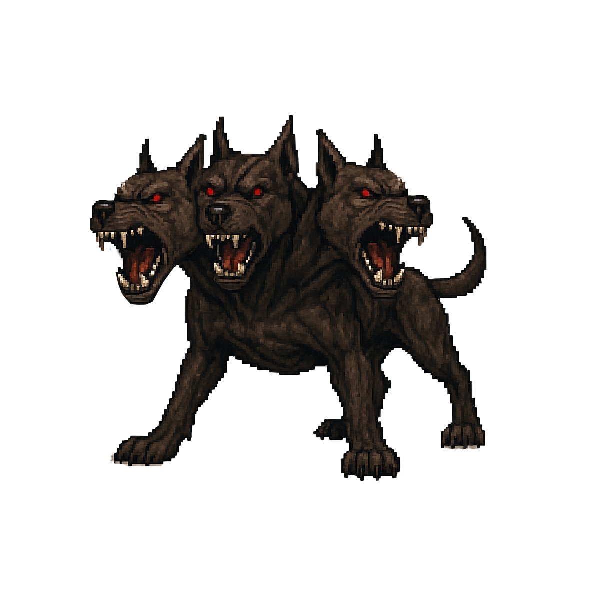

🎵 Apacigua a Cerbero 🎵
► Reproduce la secuencia secreta de notas
► Tienes 2 minutos para descubrirla
► Cada nota incorrecta reinicia tu progreso
► ¡Apacigua a Cerbero con la melodía correcta!
¡Comenzar Juego!
Apacigua a Cerbero
02:00
Presiona cualquier nota para comenzar

Do
Re
Mi
Fa
Sol
La
Si
Dó